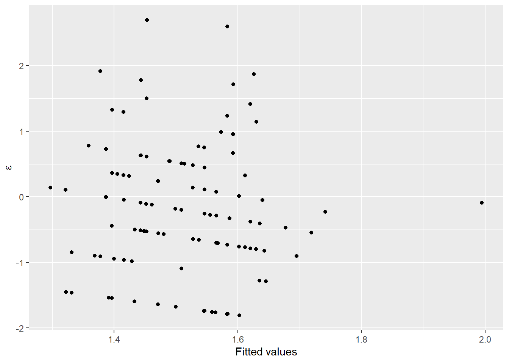
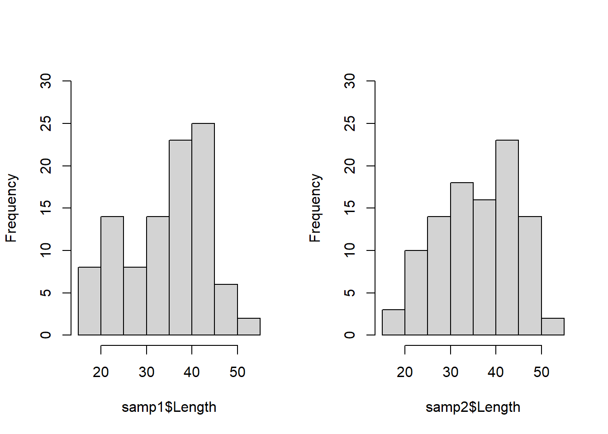

6.2 Two-sample tests
Okay, with that out of the way, now we can get on to some tests that might be a little more meaningful to most people. We can use two-sample tests to whether two groups differ in some metric of interest. This lends itself naturally to use in controlled experiments that we conduct in laboratories, for example.
6.2.1 The two-sample t-test
If you have been exposed to only one statistical test already it is probably the two-sample t-test. This is a test that is used to test for differences in some continuous variable between two groups. The test statistic itself is pretty trivial to calculate. You can find a video of that here. Seriously, if you have never done a t-test, watch the 6-minute video now. Otherwise, you may not understand what follows. I am not going to go into the math here because this is The Worst Stats Text eveR. The video will also help you understand how ANOVA and other tests work later. Understanding how these tests work will give you phenomenal cosmic powers when it comes to analyzing biological data. If you email asking me how a t-test works, I am going to send you this video.
Let’s keep working with the grasscarp data for now for the sake of consistency. But, now we want to know if there is a difference in mean length of fish depending on whether their population density is high or low. To look at this, we’ll need to make some groups in our grasscarp data that correspond to years of high and low density.
You can compare fish density between years quickly using the summary pipeline demonstrated in Chapter 3
## # A tibble: 5 x 2
## Year dens
## <int> <int>
## 1 2006 21
## 2 2007 58
## 3 2009 44
## 4 2010 43
## 5 2017 127You can see that density was much higher in 2017 than in any of the preceding years. This is because hydrilla area was reduced by several hundred hectares (ha) between 2010 and 2014 (which was actually the reason we went out to collect more data in 2017). But, these are just means and we need to be able to account for the variability in these measurements to call it science.
So, let’s build some groups based on high and low density years. First, we’ll add a new categorical variable to grasscarp called “density”, and we’ll fill it all in with the word "low" because there is only one year when density was high.
Next, we’ll change all of the observations for 2017 to "high" so we have low density and high density groupings in our density column. This way, we only have to change the variable for one year.
Then, we’ll subset the data to look at a single age so our comparisons are fair between years. I picked Age == 10 because 10 years is in the middle of the range of ages in the data set. You can try it with another age as long as there are enough data.
Now, we can conduct our two-sample t-test!
The syntax is pretty straightforward, and is similar to what we used above, except that now we have two groups so we will omit mu and specify the t-test as a formula with independent (x, density) and dependent (y, Length) variables. There is no pairing of our observations, so we specify paired = FALSE, and we tell R we don’t want to assume that the variance of Length is equal between density groups.
t.test(Length ~ density,
data = mid_carps,
paired = FALSE, # 2-sample test, not "paired"
var.equal = FALSE, # We make no variance assumption
conf.level = 0.95 # Alpha = 0.05
)##
## Welch Two Sample t-test
##
## data: Length by density
## t = -3.2263, df = 11.133, p-value = 0.007952
## alternative hypothesis: true difference in means is not equal to 0
## 95 percent confidence interval:
## -190.03710 -36.03433
## sample estimates:
## mean in group high mean in group low
## 987.7143 1100.7500The interpretation of the results is much the same as with the one-sample t-test, except that we are now testing the null hypothesis that there is no difference between groups.
We reject the null hypothesis, and we conclude that age-10 fish were significantly larger during periods of low population density than they were during years of high population density (t = -3.2262903, df = 11.1326183, p < 0.05). Makes perfect sense!
6.2.1.1 Assumptions
Equal variance
Now that we are using two samples, we should be cognizant that this test assumes equal variances in the independent variable between our two groups. If our variances are not equal, then we need to account for that (R actually assumes that the variances are unequal by default).
Let’s test to see if the variances were equal between age-10 fish in the high and low density groups. To do this, we will conduct an F-test on the ratio of the two variances. If the ratio of the variances is different than one, we reject the null that the variances are the same.
##
## F test to compare two variances
##
## data: Length by density
## F = 0.72988, num df = 20, denom df = 7, p-value = 0.5423
## alternative hypothesis: true ratio of variances is not equal to 1
## 95 percent confidence interval:
## 0.1634026 2.1950440
## sample estimates:
## ratio of variances
## 0.729877Wow, this is way to easy. I hope that you are beginning to understand the GLORY OF R. This test could be a real pain in other software programs, and may not even be an option in many.
Back on topic…we fail to reject the null hypothesis that the variances were equal. In this case, we now feel validated in the use of a two-sample t-test regardless of what R uses as the default (yes, sarcasm intended).
6.2.1.1.1 Normality
Yes, we are still worried about this one because of the reasons given in the previous section. We can check this the same way as before. End of section.
6.2.2 Two-sample Wilcox test
If we were in violation of normality, we would use the Wilcox test to test for differences in ranks. I will not go through the whole thing again here. As with the t-test, if you have not been exposed to doing a rank-sum test by hand you really should watch a video of how to do it. It really is easy once you’ve seen it and the video demystify the test for you.
I will note that the syntax is very much the same to that of the t-test now. This will pretty much stay the same for the next 6 chapters. Thank R, not me.
##
## Wilcoxon rank sum test with continuity correction
##
## data: Length by density
## W = 26, p-value = 0.005015
## alternative hypothesis: true location shift is not equal to 0As expected, this test also shows that the two samples differ significantly.
Note: this is equivelent to the Mann-Whitney U-test you may have learned about elsewhere. Had these samples been paired, R would have defaulted to a signed-rank test, with which you may also be familiar.
6.2.3 Presenting your results
While it is important to report the test statistics, df, etc., it can be just as meaningful to give the sample means (reported in the t.test) and show a graph. Remember: don’t make shitty graphs. Be proud of your results and show your readers what they mean.
In this case, a boxplot or a violin plot would work great. We haven’t looked at violin plots yet, so let’s give them a whirl!
Violins are a lot like box plots except they give us a little better visual description of the shape of sampling distributions within groups. I added some ggplot2 functions to control fill and color of the violins in the example below. You can check out this blog post for some other cool examples with other ggplot geometries. Play around with the plotting code above to change what you like. Remember, all of the customization achieved using the theme() function is the same across plot types.
Here is a quick, ugly violin plot with some basic options. Pretty easy to make, but also kind of makes you want to puke.

Here is a much better plot. Not that much more difficult to make, and doesn’t make you want to puke even if the code does a little bit.
mid_carps %>%
ggplot(aes(x = density, y = Length, fill = density, color = density)) +
geom_violin(aes(group = density), trim = FALSE, size = .75) +
scale_x_discrete(breaks=c("high", "low"), labels = c("High", "Low")) +
scale_fill_grey(start = 0.9, end = 0.4) +
scale_color_grey(start = 0.8, end = 0.3) +
xlab("Density") +
ylab("Total length (mm) at age 10") +
labs(fill = "Density", color = "Density") +
theme_bw() +
theme(
axis.title.x = element_text(vjust = -1),
axis.title.y = element_text(vjust = 3),
panel.grid = element_blank()
)
There, isn’t that fancy? I think that gives you a much more detailed understanding of how Length varies between high and low population density than a simple p-value. But, maybe its just me…